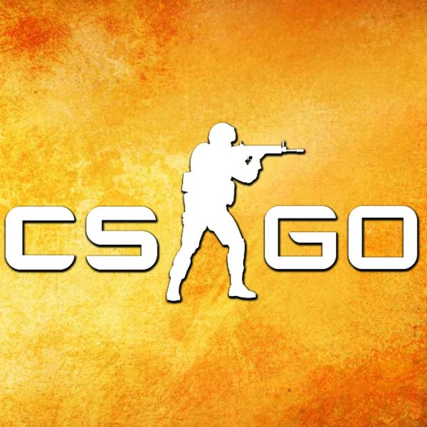

Projekt, nad którym pracowaliśmy, był głównie dziełem Yehora Kryvoi i resztę przez Oliwiera. Warto zaznaczyć, że naszym zadaniem było stworzenie gry karcianej na potrzeby projektu szkolnego, a nie samym wymyśleniem gry. Otrzymaliśmy wytyczne od nauczyciela dotyczące tego, jak powinien wyglądać nasz projekt.
Miłosz również był początkowo częścią zespołu, jednakże nie przyczynił się w istotny sposób do pracy nad projektem. Z tego powodu podjęliśmy decyzję o usunięciu go z zespołu, abyśmy mogli skupić się na efektywnej realizacji projektu.
Ważnym aspektem naszej pracy było przyznanie odpowiednich zasobów i odpowiedzialności. Yehor Kryvoi przejął przewodnictwo w projekcie i miał decydujący wpływ na jego rozwój. Oliwier również odegrał swoją rolę, wnosząc swoje elementy kodu i pomysły.
